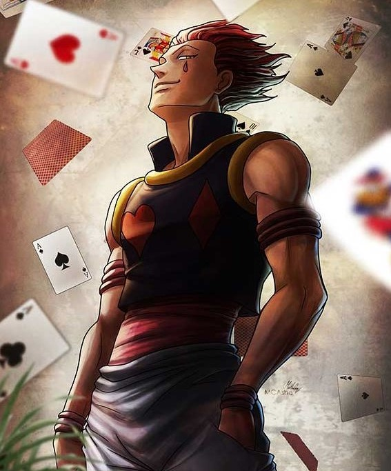
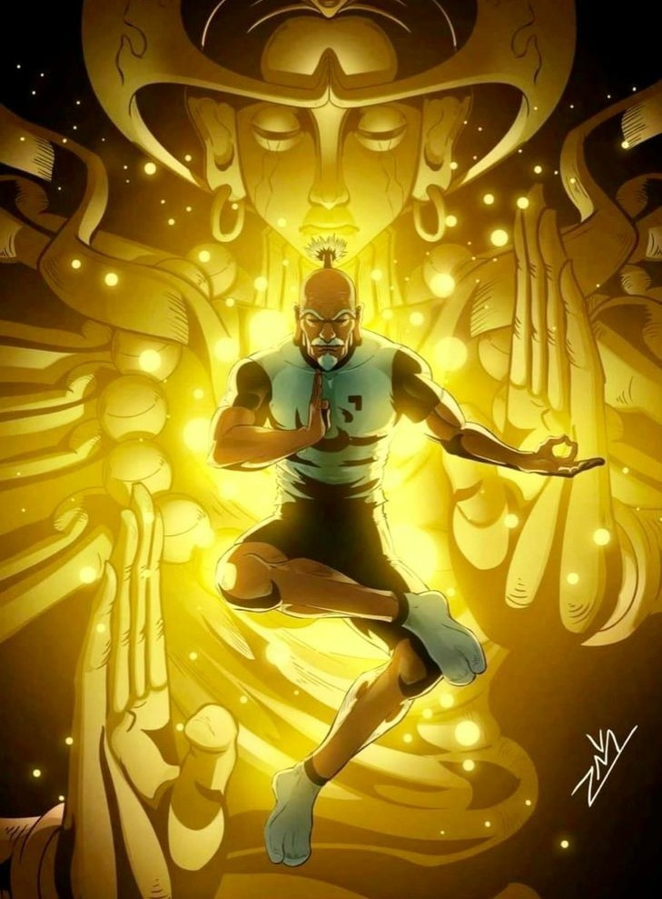

-
Hunter x Hunter
Nen
Descrição
Hunter × Hunter é uma série de mangá escrita e ilustrada por Yoshihiro Togashi. Os capítulos são serializados na revista Weekly Shōnen Jump desde 3 de março de 1998, onde são compilados e publicados em formato tankobon pela editora Shueisha, embora o mangá tenha frequentemente entrado em hiato desde 2006.
-
Gon Freecs
Nen Intensificação
Personalidade
Habilidades :
Janjanken ou Pedra Papel Tesoura é uma técnica criada por Gon com 3 usos diferentes:
Pedra: Gon carrega sua aura em sua mão e descarrega tudo em um soco muito poderoso. Papel: Gon "dispara" sua aura como se fosse uma grande esfera de Nen. Tesoura: Gon concentra sua aura na forma de uma lâmina extremamente afiada. -
Killua Zoldyck
Nen Transformação

Descrição
Killua é considerado um promissor membro da família, mas acaba fugindo de casa e entrando no Exame Hunter em busca de diversão, onde conhece Gon e os outros
-
Leorio Paradinight
Nen Emissão
Descrição
Leorio Paradinight é um dos 4 protagonistas do anime/mangá Hunter x Hunter e amigo de Gon, Kurapika e Killua. Ele não tem grandes habilidades como seus amigos e nem é muito responsável, mas tem um grande coração.
-
Kurapika
Nen Conjuração e especialização
Descrição
Ele é o último sobrevivente da tribo Kuruta. Ele foi líder da organização fundada por Light Nostrade, bem como um Blacklist Hunter e agora um membro dos zodíacos, com o codinome "Rato", substituindo Pariston Hill.
-
Hisoka Morow
Nen Transformação
Descrição
Hisoka é retratado como um personagem egoísta, sádico e masoquista. Só faz o que quer, e só faz se aquilo trouxer alguma forma de entretenimento para ele. Seu principal hobby é procurar pessoas fortes para lutar, como também encontrar pessoas promissoras em tornarem-se fortes. Isso de alguma forma o "excita".
-
Chrollo Lucilfer
Nen Specialization
Descrição
Chrollo é calmo, inteligente e carismático, pois parece ser um líder nato e capaz de manter a Trupe unida, apesar das personalidades voláteis de seus membros. Enquanto ele é um estrategista muito capaz, Chrollo também é muito confiante em suas próprias habilidades de luta, bem como nas dos outros membros da Aranha . Ele sempre tem pelo menos duas pessoas com ele, e é por isso que Hisoka achou tão difícil lutar com ele.
-
Isaac Netero
Nen Intensificação
Descrição
Aizakku Netero foi o décimo segundo presidente da Associação Hunter e mestre da escola de artes marciais Shingen. Ele é um dos personagens mais antigos e mais poderosos.